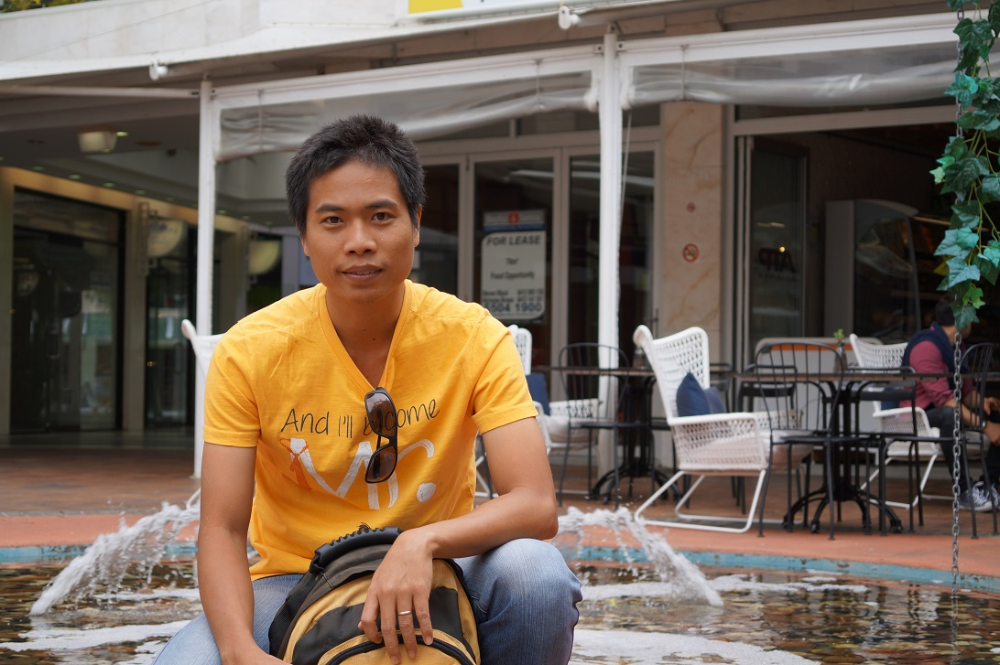

CURRICULUM VITAE

💠 Personal Details
- Full Name : LE TRONG HIEU - Male
- Date of Birth : 15 December, 1982
- ID - Card No: 079082023771 - issued on Dec 22, 2021
- Address : 31/12 Tan Tru Street, Ward 15, Tan Binh District, Ho Chi Minh City
- Tel : (028) 8117225 - Mobile : 0989 606800 - Email : ltronghieu12@gmail.com
💠 Education & Qualification
- 9/2000 - 1/2006 : University of Technology Ho Chi Minh -
Bachelor of Mechanical Engineering
- 10/2005 - 7/2006 : VSIC Computer Shool – Ho Chi Minh, Viet Nam
- 6/2008 - 10/2008 : Training section of NORTEL for Carrier VoIP project
- Certificates :
- Microsoft : MCSE, MCSA Messaging and Security
- Cisco : CCNA
- CompTIA : Linux+, Security+, Network+
💠 Working Experience
TMA Solutions - Ho Chi Minh City, Viet Nam
6/2008 – Present: Tester - Senior Engineer
- Two years experienced working with NORTEL, the largest telecom company in North America
- Six months went onsite to work for NORTEL in Canada, communicate directly with designers/foreigners from Canada/US/India/Turkey…
- Hand-on experience in lab environment and VoIP equipment likes Media Gateway (Askey, Mediatrix, SBV, TTM, SIP phone, CentrexIP phone, BCM50, Camiant Policy Server, Media Proxy…) and OS likes Linux/Sun Solaris/Win2003…
- Solution Specialist:
- Cable Solution verification : PacketCable 1.5 Specification, Lawful Interception, NCS, PacketCable Multimedia, Provisioning Server, Policy Server…
- Running high capacity, traffic and robustness test
- Running manual test lots of telecom features
- Work with many kinds of trunk : ISUP, SIP-T, PRI …
- SIP Solution verification : Carrier SIP Line, Enterprise SIP PBX and SIP Interopt solution
- Play a role technical support and troubleshoot for team
Asia Commercial Bank - Ho Chi Minh City, Viet Nam
1/2007 – 6/2008: IT Officer
- Managing, maintaining Linux server with SMB LDAP model
- Assure network running smoothly
- Operating, maintaining and update daily antivirus system
- Troubleshoot problem related to computer and network
- Research about security and availability solution in Windows environment (e.g. cryptography, PKI, security baseline, Disaster Recovery, NLB, Clustering …)
💠 LANGUAGE & COMPUTER SKILLS
- English : Toeic 705
- Well reading, translating and comprehending English technical documents
- Computer skills : Well-typing, using the Microsoft Office fluently: Word, Excel, PowerPoint, Visio
💠 STRENGTHS
- Responsibility
- Self-motivated
- Getting new knowledge quickly
- Good at problem-solving
- Good at team working
💠 HOBBIES
- Meeting people and sharing information
- Playing football, listening to music, watching movies, reading books, running, yoga, gym
- Traveling